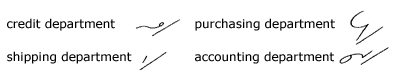

Unit 30
Phrasing Principles
218. The
words misunderstand and misunderstood are expressed
by stand and stood placed under mis,
with mis placed on the line of writing. This rule
is extended to the words understand and understood,
when they are preceded by a pronoun, a brief form, or a short
phrase form:
219.
The words extra, enter, over,
under, short, center, counter,
agree, and grand are expressed by the prefixal
forms placed over the next word:
220.
The word done is expressed by the den
blend in many phrases:
221.
In many phrases the word than is expressed by n:
222.
Many useful business phrases may be secured by slightly
modifying the form for us:
223.
In many phrases department is expressed by a disjoined
d:

224.
In a number of phrases the word forms are modified or a
word is omitted where the grammatical construction of the sentence
would compel its restoration when transcribing:
225. Reading and Dictation Practice
226. Writing
Practice
1. The supreme test of his intelligent
understanding of the transaction was revealed in his superior
statement regarding it.
2. A shortage in the shipment was discovered
by the superintendent, who immediately took the matter up with
his superior.
3. We suspect that the error in judgment was
due entirely to his susceptible and unsuspicious nature, as well
as to his shortsightedness.
4 We shall not overlook his tendency to overcharge
our batteries, something that will be overcome by the simple expedient
of giving the undertaking to McLain.
5. The instructor attempted to restrain his
students from further controversy about the peculiar effects of
electrolysis, to say nothing of the heated discussion about centrifugal
and centripetal forces.
6. His disinterested attitude led to an unparalleled
controversy.
7. Mr. McFadden seemed disinclined to enter
into the agreement owing to the aggressive policy and the superior
air of the gentleman representing the Paramount Overcoat
Corporation.
8. The transfer of the contract may be easily
effected, but I am inclined to think that it will be disadvantageous.
9. Both the interior and exterior finishes
were designed by Mr. McLaren, of McLaren, McNamara & McIntyre.
10. The reconstruction of the dam was resisted
by a multitude of citizens because of the extraordinary declivity
of the adjacent walls of the cliff which would necessitate much
extra construction.